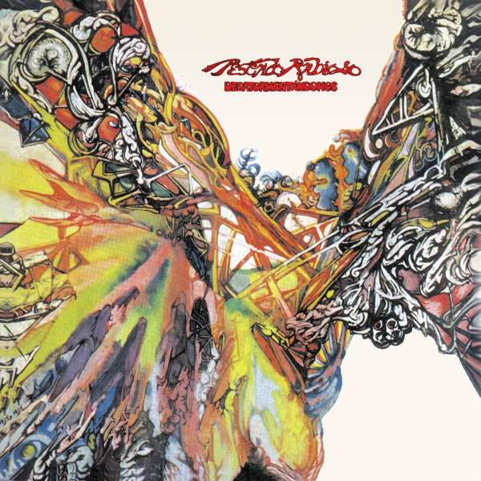

1971: PESCADO RABIOSO: ODA AL HARD ROCK
Formada por Luis Alberto Spinetta en guitarra, David Lebón en bajo, Black Amaya en batería, y Carlos Cutaia en teclados, definió la parte más dura de su carrera.
Solo bastaron dos discos, "Desatormentándonos", y "Pescado 2", para poder mostrar todo el contenido potente que se oia por aquelllos tiempos, a la par de Pappos Blues y por qué no, Led Zepellin.
En el siguiente link está su canal oficial de Youtube donde podemos escuchar toda su discografía
